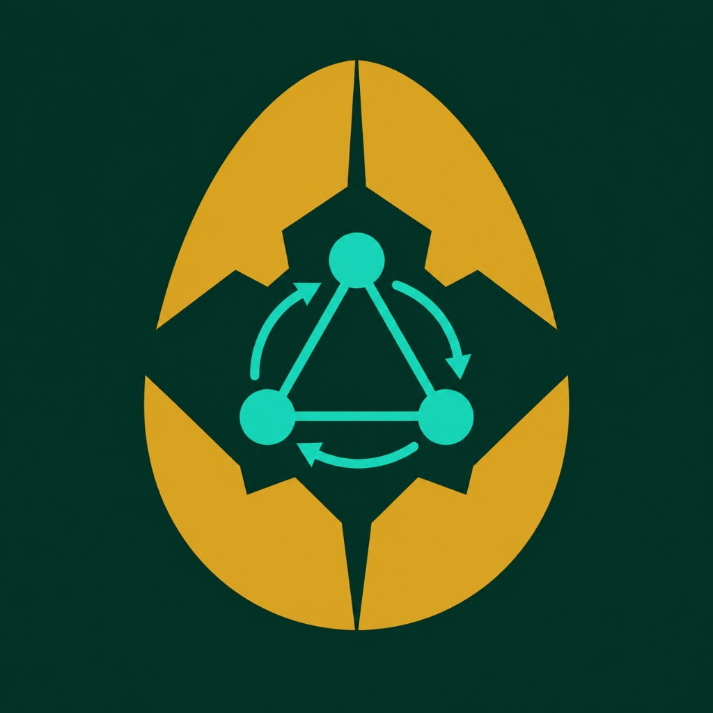

Where compliant RWAs hatch into Agent Skills. 把合规 RWA 孵化成可复用 Agent Skill。
An agent-native issuance layer for compliant RealFi on Pharos — extends the official Skill Engine, deployed and smoke-tested on Atlantic testnet. 面向 Pharos 合规 RealFi 的 Agent 原生发行层——扩展官方 Skill Engine，已在 Atlantic 测试网 部署并通过 smoke 测试。
Issuing a real-world asset on-chain is not "deploy a token." A regulated RWA must answer hard questions inside the token itself. 把现实世界资产搬上链 不是「发个代币」。一支受监管的 RWA，必须在代币内部回答几个硬问题。
Who can hold it? Who can they transfer to? What happens to a sanctioned wallet? How is yield distributed and audited? 谁能持有？能转给谁？违规钱包怎么处置？收益怎么分配、怎么审计？
Standard ERC-20 answers none of these. Most "RWA" projects stop at a mint button — and skip the part where an agent actually operates the asset over time. 标准 ERC-20 一个都答不了。大多数「RWA」项目停在一个 mint 按钮，跳过了最关键的——一个 Agent 如何长期运营这支资产。
Pharos sits at the intersection of RealFi (real-world asset value flows), protocol-native compliance, and agentic on-chain infrastructure. HatchFi is not a standalone script — it extends the official Pharos Skill Engine (developer guide) with RWA-specific references, diligence gates, and a spawn pipeline. Pharos 位于 RealFi（现实世界资产价值流）、协议原生合规与 Agent 链上基础设施的交汇点。HatchFi 不是独立脚本——它扩展官方 Pharos Skill Engine（开发者手册），增加 RWA 专有 reference、尽调闸门与 spawn 流水线。
ERC-3643-style CompliantRWAToken — identity, compliance caps, dividends, lifecycle. Deployed on Atlantic Testnet.ERC-3643 风格 CompliantRWAToken——身份、合规上限、派息、生命周期。已在 Atlantic 测试网部署。
SKILL.md capability index · risk tiers (Low / Medium / High) · human confirm cards · state.json audit memory · consent gates · pre-publish Skill InspectorSKILL.md 能力索引 · 风险分档（低/中/高）· 人工确认卡片 · state.json 审计记忆 · 同意闸 · 发布前 Skill Inspector
Each issuance → skills/<SYMBOL>-asset/. Opt-in sharing can add reusable asset Skills to Pharos — public surface only, owner data stays private.每次发行 → skills/<SYMBOL>-asset/。Opt-in 分享可向 Pharos 增加可复用的资产 Skill——仅公开操作面，owner 数据保持私有。
Agent-orchestrated RWA tokenization is a serious research direction — see Borjigin, Zhou, He (2025) arXiv:2507.00096. That paper proposes multi-agent workflows with an AI governance layer. HatchFi adopts the orchestration and approval-before-mint ideas, but replaces the AI black box with reproducible RED/YELLOW/GREEN gates and adds on-chain diligence hash attestation on Atlantic testnet. Agent 编排 RWA 代币化是正经研究方向——见 Borjigin 等 (2025) arXiv:2507.00096。论文提出多 Agent + AI 治理层。HatchFi 采纳编排与批准前置思路，但用可复现红黄绿闸门替代 AI 黑箱，并在 Atlantic 测试网增加链上尽调哈希存证。
onchain-diligence + offchain-diligenceisVerified + canTransferAssetTokenizationRegistrypost-issuance-monitoring · #10b without AI freezeDiligenceAttestationRegistry · playbook · npm run evidence:hash · attest:dry-run · Foundry golden parity| Platform (Tokeny / Securitize)平台层 | AI discovery only仅 AI 发现 | HatchFiHatchFi | |
|---|---|---|---|
| Agent pipelineAgent 流水线 | — | partial | full |
| ERC-3643 | yes | — | yes |
| Deterministic diligence确定性尽调 | — | partial | yes |
| Skill spawnSkill 繁殖 | — | — | yes |
Full mapping: docs/PAPER_ALIGNMENT.md. Honest boundary: mint gate is agent-enforced in Phase 1; contract hardening is Phase 2. Testnet registries do not replace global land-title oracles. 完整对照：docs/PAPER_ALIGNMENT.md。诚实边界：Phase 1 mint 闸门由 agent 强制；合约硬化为 Phase 2。测试网 registry 不能替代全球产权登记。
Pitch答辩句: Paper = qualitative blueprint · HatchFi = running on Atlantic with deterministic gates + optional on-chain evidence hash. 论文 = 定性蓝图 · HatchFi = Atlantic 已跑通 + 确定性闸门 + 可选链上 evidence 哈希。
Phase A Diligence Gate Phase B Compliant Issuance Phase C Lifecycle Ops Phase D Skill Hatch Phase E Security Gate ───────── ─────────────── ───────── ────────────────── ───────── ─────────────── ───────── ─────────── ───────── ───────────── read-only GREEN/YELLOW/RED deploy ERC-3643 token whitelist register/freeze/mint spawn skills/MPF-asset/ static Skill Inspector 3-stage sanctions+onchain+ mint identity·compliance· dividends deposit/claim/sweep private 6 diligence refs scan prompt/secret/Web3 evidence offchain → attest hash smoke freeze triple gate recovery forcedTransfer/pause refine PERMISSIONS.md reports MD/JSON/SARIF-ready → state.diligence preflight 45 tests + audit monitor #10b read-only opt-in consent.shares blocker critical/high
onchain-diligence · offchain-diligence · sanctions-screening · compliance-knowledge · onchain-attestation · post-issuance-monitoring · rwa-issuance · rwa-dividend · spawn-asset-skill · pharos-base-ops · pharos-deploy-runbook · pharos-verification
refs:generate parses the Solidity source → 30 callable entries · 12 ERC-3643-aligned events · 5 typed errors · 33 Foundry tests incl. cross-language golden vectors. refs:check fails on drift.refs:generate 解析 Solidity 源 → 30 个可调用项 · 12 个 ERC-3643 对齐事件 · 5 个类型化错误 · 33 项 Foundry 测试含跨语言 golden 向量。refs:check 漂移即失败。
scripts/skill_inspector.py statically scans skills before install/upload/publish/share. Current report: 22/100 MEDIUM, no critical/high/medium blockers.scripts/skill_inspector.py 在安装/上传/发布/分享前静态扫描 skill。当前报告：22/100 MEDIUM，无 critical/high/medium blocker。
Most issuance tools produce one deployed token and stop. HatchFi produces a deployed token plus a private operating Skill for that exact asset. As you manage it in natural language, the Skill learns your preferences and gets more aligned with your RWA needs. 大多数发行工具只产出一支代币就结束。HatchFi 产出代币的同时，还为该资产产出一个私有运营 Skill。当你用自然语言管理它时，这个 Skill 会学习你的偏好、越来越贴合你的 RWA 需求。
HatchFi (parent skill) └── issues MPF on Atlantic ──spawn──► skills/MPF-asset/ ◄── serves YOU first └── you keep operating it ──refine──► better-fit Skill (whitelist · mint · dividends) WITHOUT redeploying
spawn:assetFills templates from state.asset — no LLM guessing — and archives any prior version under versions/.从 state.asset 确定性填充模板——零 LLM 猜测——并把旧版本归档到 versions/。
refine:assetWrites a private PREFERENCES.md overlay from state.personalization; bumps meta.json version with an evolution audit trail. No redeploy.从 state.personalization 写入私有 PREFERENCES.md overlay；meta.json 版本号 +1 并留进化轨迹。无需重新部署。
spawn:versions / rollbackList and restore archived snapshots; an auto-generated <SYMBOL>-contract-surface.md stays in sync with the contract.列出并恢复归档快照；自动生成的 <SYMBOL>-contract-surface.md 与合约保持同步。
The Skill and everything it accumulates — investor identities, diligence evidence, dividend detail, your preferences — are yours and private by default (local state.json, gitignored, never on-chain, never bundled). 这个 Skill 及它积累的一切——投资者身份、尽调证据、派息明细、你的偏好——都归你所有、默认私有（本地 state.json，gitignore，不上链、不打包）。
Sharing a Skill ≠ sharing your data. Already proven: issuing MPF produced skills/MPF-asset/ — private, with a permission manifest, yours to run today and open only by choice. 分享一个 Skill ≠ 分享你的数据。 已实证：发行 MPF 产出了 skills/MPF-asset/——带权限清单、私有、你今天就能跑，只在你愿意时才对外开放。
Opt-in sharing can still help the ecosystem. When an issuer chooses to open a Skill, the package includes only the public operating surface (contract address, commands, playbooks) — not owner data — so compliant RealFi operations become more reusable over time, while the owner controls sharing. Opt-in 分享仍可贡献生态。 当发行人选择开放 Skill，包内仅含公开操作面（合约地址、命令、playbook）——不含 owner 数据——Pharos 上合规 RealFi 操作可随时间更易复用，开关仍在发行人手里。
When an issuer chooses to open a spawned Skill, they contribute a reusable operating unit to the Pharos agent ecosystem — contract address and playbooks included, no owner PII bundled. 当发行人选择开放 spawn 出的 Skill，可向 Pharos Agent 生态贡献一个可复用的运营单元——含合约地址与 playbook，不打包 owner PII。
Agent A HatchFi (parent skill) ├─ diligence gate → deploy MPF @ Atlantic → smoke mint └─ spawn skills/MPF-asset/ (private by default · PERMISSIONS.md) Agent B, C, … (when owner opts in via share consent) └─ import skills/MPF-asset/SKILL.md └─ manage whitelist · mint · dividends · diligence WITHOUT redeploying · WITHOUT accessing owner's state.json Every new RWA hatched → +1 composable capability unit on Pharos → compliant RealFi operations grow more reusable over time → owner holds the switch · manifest declares exposed vs withheld
SKILL.mdFull issuance pipeline for any RWA — diligence → deploy → lifecycle → spawn.任意 RWA 的完整发行流水线——尽调 → 部署 → 生命周期 → spawn。
Manhattan Property Fund · TOKEN=0x9757…b5C3 · 4 diligence refs · spawned v5 & operable today.Manhattan Property Fund · TOKEN=0x9757…b5C3 · 4 份尽调 reference · 已 spawn v5、今日可运营。
skills/<NEXT>-asset/Same spawn pipeline — deterministic template fill from state.asset, zero LLM hallucination.同一 spawn 流水线——从 state.asset 确定性模板填充，零 LLM 幻觉。
Core issuance is live on Atlantic. Round 7 expanded diligence from a single read-only gate into a three-stage pipeline (sanctions · on-chain · off-chain), synced OFAC data, deployed a Mock oracle, respawned MPF v5, and pushed everything to GitHub. 核心发行已在 Atlantic 落地。第 7 轮将尽调从单一只读闸门扩展为三阶段流水线（制裁 · 链上 · 链下），同步 OFAC 数据、部署 Mock 预言机、重新 spawn MPF v5，并推送至 GitHub。
ERC-3643-style CompliantRWAToken · MPF @ Atlantic · 45 Foundry tests · Skill Inspector 22/100 MEDIUM · private skills/MPF-asset/.ERC-3643 风格 CompliantRWAToken · MPF @ Atlantic · 45 项 Foundry 测试 · Skill Inspector 22/100 MEDIUM · 私有 skills/MPF-asset/。
onchain-diligence · offchain-diligence · sanctions-screening · compliance-knowledge · INTEGRATION.md · 93-address OFAC snapshot · MockOFACRegistry @ 0x4FD3…F400.onchain-diligence · offchain-diligence · sanctions-screening · compliance-knowledge · INTEGRATION.md · 93 地址 OFAC 快照 · MockOFACRegistry @ 0x4FD3…F400。
DiligenceAttestationRegistry + AssetTokenizationRegistry · onchain-attestation.md · paper mapping · 45 Foundry tests.DiligenceAttestationRegistry + AssetTokenizationRegistry · onchain-attestation.md · 论文对照 · 45 项 Foundry 测试。
HatchFi is deployed and smoke-tested on Atlantic Testnet — the records below are public and independently verifiable. Smoke path: registerIdentity is skipped when the deployer is already verified; mint + receipt assert is the executed write path.
HatchFi 已在 Atlantic 测试网 部署并通过 smoke 测试——下方记录均可公开独立核验。Smoke 路径：若 deployer 已验证则跳过 registerIdentity；mint + receipt 断言 为实际执行的写路径。
| Contract (MPF)合约（MPF） | 0x975704ca2182b3fc64fd82ad2c01d8ec5be0b5c3 |
| Deploy tx | 0xd00bcc…a023 |
| Smoke mint tx | 0x1b2127…b5541 |
| Mock OFAC oracleMock OFAC 预言机 | 0x4FD3…F400 · deploy tx · demo RED演示 RED 0x7F36…be1B |
| Network网络 | Pharos Atlantic Testnet · chainId 688689 |
The contract is ERC-3643-style (T-REX). Every transfer is forced through three checks in the _update() hook. 合约采用 ERC-3643（T-REX）风格。每笔转账都被强制经过 _update() 钩子的三层检查。
mint enforces identity + compliance caps; forcedTransfer is a regulatory path (verified recipient only). Backed by 45 Foundry tests and a SECURITY.md audit trail. mint 强制身份 + 合规上限；forcedTransfer 为监管路径（仅需收款方已验证）。背后是 45 项 Foundry 测试 + SECURITY.md 审计记录。
Before any deploy/mint, the agent runs a three-stage, read-only pipeline: sanctions screening (denylist + optional oracle) → on-chain checks (#2–#10) → off-chain background (ISS/CUS/INT roles, consent-gated). Every conclusion is evidence-backed — written to state.diligence. RED blocks all issuance.
任何 deploy/mint 之前，agent 跑三阶段只读流水线：制裁筛查（denylist + 可选预言机）→ 链上检查（#2–#10）→ 链下背景（ISS/CUS/INT 角色、同意闸）。每条结论写入 state.diligence 并附 evidence。RED 拒绝一切发行。
| Stage阶段 | PlaybookPlaybook | RED trigger (examples)RED 触发（示例） |
|---|---|---|
| Sanctions制裁 | sanctions-screening | denylist hit · oracle isSanctioned==true · stale list flagdenylist 命中 · 预言机 isSanctioned==true · 名单过期 flag |
| On-chain链上 | onchain-diligence | self-destructed contract · deterministic risk flags (#2–#10)合约自毁 · 确定性 risk flag（#2–#10） |
| Off-chain链下 | offchain-diligence | red flags in background · erc3643_conformance fail背景红旗 · erc3643_conformance 失败 |
| Knowledge知识库 | compliance-knowledge | rating pure function: any risk → RED; ≥2 warn → YELLOW评级纯函数：任一 risk → RED；≥2 warn → YELLOW |
Function & event naming strictly follows ERC-3643 (T-REX) so the contract can smoothly split into a standard multi-contract suite later. Permission matrix: onlyOwner (governance, dividends, dust sweep) vs onlyAgent (KYC, mint, freeze, regulatory paths).
函数与事件命名严格对齐 ERC-3643（T-REX），便于未来平滑拆分为标准多合约套件。权限矩阵：onlyOwner（治理、派息、dust 回收）vs onlyAgent（KYC、mint、冻结、监管路径）。
Each gate below is a review round run before release. Issues found were fixed with a named regression test, or documented — the loop repeated until things were ready to ship. 下方每一关都是发布前走过的审查轮次。发现的问题以具名回归测试修复或记录在案——循环重复直到可发布。
forge test → security audit → compliance review → production audit → adversarial review → Atlantic verify → release
forge test → 安全审计 → 合规审查 → 生产就绪 → 对抗评审 → Atlantic 验证 → 发布
| forge build / test | 45 passed · 0 failed (incl. fuzz invariant: dividends never over-distribute)（含 fuzz 不变量：派息绝不超发） |
| Skill eval suiteSkill eval 套件 | 64/64 passed · gates · risk tiers · consent · spawn structure · diligence refs闸门 · 风险档 · 同意闸 · spawn 结构 · 尽调 ref |
| Diligence expansion尽调扩展 | INTEGRATION.md · 4 playbooks · OFAC sync · 93-address snapshot4 份 playbook · OFAC 同步 · 93 地址快照 |
| Security audit安全审计 | SECURITY.md · fixes pinned by regression tests修复对应回归测试 |
| Compliance review合规性审查 | closed mint cap-bypass (compliance-critical)堵上 mint 绕过上限（合规关键） |
| Production-readiness review生产就绪审查 | documented in project review notes见项目审查记录 |
| Adversarial (red-team) review对抗式（红队）评审 | issues resolved pre-release发布前问题全解决 |
| Pharos Skill InspectorPharos Skill Inspector | 22/100 MEDIUM · 0 critical/high/medium blockers0 critical/high/medium blocker |
| On-chain deploy + smoke链上部署 + smoke | 0x9757…b5C3 · Atlantic Testnet · mint 1e18 · receipt status=1 |
| Mock OFAC oracleMock OFAC 预言机 | 0x4FD3…F400 · deploy tx部署 tx 0x7ae012…a8fa |
| Hatched Skill孵化 Skill | skills/MPF-asset/ spawned v5 · 4 diligence refs · private已 spawn v5 · 4 份尽调 ref · 私有 |
| Key safety私钥安全 | .env · state.json gitignored已忽略 |
Full reproducible evidence: COMPLETED_VALIDATION.md · QUICKSTART.md 完整可复现证据：COMPLETED_VALIDATION.md · QUICKSTART.md
Fixed: mint branch now calls canTransfer(0, to, value). Tests: test_MintEnforcesMaxBalancePerInvestor, test_MintEnforcesMaxHolderCount.修复：mint 分支现调用 canTransfer(0, to, value)。测试：test_MintEnforcesMaxBalancePerInvestor、test_MintEnforcesMaxHolderCount。
Fixed: burn rebalances frozen tokens. Test: test_BurnKeepsFrozenWithinBalance.修复：burn 重新平衡冻结份额。测试：test_BurnKeepsFrozenWithinBalance。
Tests: test_DividendDustSwept, test_RecoveryMigratesPendingDividend, fuzz invariant on over-distribution.测试：test_DividendDustSwept、test_RecoveryMigratesPendingDividend、超发 fuzz 不变量。
Expanded from 5 cast checks to 4 playbooks · npm run diligence:sync · MockOFACRegistry on Atlantic · eval 64/64.从 5 项 cast 检查扩展为 4 份 playbook · npm run diligence:sync · Atlantic 部署 MockOFACRegistry · eval 64/64。
Fixed: deterministic risk triggers (denylist hit, self-destructed contract). RED now actually blocks issuance.修复：确定性 risk 触发（denylist 命中、合约自毁）。RED 现在真能拒绝发行。
1. PharosScan · MPF contract
2. Deploy tx · Smoke mint
3. Mock OFAC oracle
4. skills/MPF-asset/SKILL.md — spawned child skill v5
git clone hatchfi-pharos-skill
npm run judge:package
# gate:test · gate:cli · TOOLS 8 · readiness
npm run build && npm run test
# → 45 passed · 64/64 eval
Submission scope: ERC-3643-style RWA on Atlantic Testnet (three-stage diligence gate) · agent Skill extending the Pharos Skill Engine · 10 playbooks · spawn → refine → version pipeline · auto-generated contract surface · 64-check eval harness · Skill Inspector gate · Foundry tests · Mock OFAC oracle · security review documented · data sovereignty with opt-in sharing.
提交范围：Atlantic 测试网上 ERC-3643 风格 RWA（三阶段尽调闸门）· 扩展 Pharos Skill Engine 的 agent Skill · 10 份 playbook · spawn → refine → version 流水线 · 自动生成合约能力面 · 64 项 eval · Skill Inspector 门 · Foundry 测试 · Mock OFAC 预言机 · 安全审查已文档化 · 数据主权 + opt-in 分享。
curl -L https://foundry.paradigm.xyz | bash && foundryup forge install OpenZeppelin/openzeppelin-contracts@v5.1.0 && forge install foundry-rs/forge-std npm run judge:package # one shot: gate:test · gate:cli · mcp:probe · readiness npm run gate:cli # narrated RED → GREEN → attest → mint gate npm run build && npm run test # 45 passed · no wallet needed npm run eval:skill # 64/64 deterministic skill checks npm run diligence:sync # OFAC snapshot → state.json denylist npm run refs:generate # contract → references/generated/contract-surface.* npm run inspect:skill # static skill security gate · no high/critical npm run check # full local gate (build · test · refs · eval · inspector) export PRIVATE_KEY=0x... # local only · never commit export PHAROS_RPC_URL=https://atlantic.dplabs-internal.com npm run preflight:pharos # chainId 688689 · balance check npm run deploy:pharos # → deployments/pharos.json npm run deploy:mock-ofac # → deployments/mock_ofac_atlantic.json npm run smoke:pharos # mint + receipt assert (registerIdentity if needed) npm run spawn:asset # → skills/<SYMBOL>-asset/ + PERMISSIONS.md npm run refine:asset # refine PREFERENCES.md from state.personalization